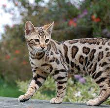

|  |
| Bengal |
BEHAVIOR
The Bengal is highly active and highly intelligent. This makes him fun to live with, but he can sometimes be challenging. On the whole, the Bengal is a confident, talkative, friendly cat who is always alert. Nothing escapes his notice. He likes to play games, including fetch, and he’s a whiz at learning tricks. His nimble paws are almost as good as hands, and it’s a good thing he doesn’t have opposable thumbs or he would probably rule the world. Bored bengal cats can also adopt some unconventional (and slightly destructive) habits, including: turning light switches on and off, fishing seals out of drains and excitedly plucking CDs from your DVD player.
Fond of playing in water, the Bengal is not above jumping into the tub or strolling into the shower with you. Aquarium and pond fish may be at risk from his clever paws. He also loves to climb and can often be found perching at the highest point he can reach in the home. A tall cat tree or two is a must for this feline, as are puzzle toys that will challenge his intelligence.
On the rare occasions that he isn’t swinging on chandeliers or swimming in your pool, the affectionate Bengal will be pleased to sit on your lap. It goes without saying that he will share your bed. And yes, he steals the covers.
GROOMING
The Bengal could never be called delicate. He is an athlete: agile and graceful with a strong, muscular body, as befits a cat who looks as if he belongs in the jungle. His broad head is a modified wedge shape, longer than it is wide, with rounded contours. Atop it are medium-size to small ears that are relatively short, set toward the side of the head. Large oval eyes are almost round. Joining the head to the body is a long, muscular neck. Supporting the body are medium-length legs, slightly longer in the back than in the front, with large, round paws. A thick, medium-length tail tapers at the end and is tipped in black. When a Bengal rolls over, you can see that another characteristic is a spotted belly.
Enhancing the Bengal’s wild appearance is a short, thick pelt that feels luxuriously soft and silky. It comes in several colors and patterns, including brown tabby, seal mink tabby, black silver tabby, and seal silver lynx point. The coat can be spotted randomly or in horizontal patterns, or it can be marbled, with horizontal stripes arranged randomly on a lighter background. Some Bengals have a coat that is described as “glittered.” The fur shimmers in the light, as if it were tipped with gold dust.
HEALTH PROBLEMS
Both pedigreed cats and mixed-breed cats have varying incidences of health problems that may be genetic in nature. Bengals are generally healthy, but the following diseases have been seen in the breed:
- Distal neuropathy, a nervous system disorder that causes weakness. It can occur in Bengals as early as 1 year of age. Fortunately, many cats recover on their own, although a few relapse.
- Flat-chested kitten syndrome, a deformity that can range from mild to severe. Kittens who survive to adulthood usually show no signs once they reach maturity.
- Hip dysplasia, which in severe cases can cause lameness
- Hypertrophic cardiomyopathy, a form of heart disease that is heritable in some breeds.
- Patellar luxation, a hereditary dislocation of the kneecap that can range from mild to severe. Severe cases can be alleviated with surgery.
- Progressive retinal atrophy, a degenerative eye disease.
NUTRITION
Every cat is unique and each has their own particular likes, dislikes, and needs when it comes to food. However, cats are carnivores and every cat must obtain 41 different and specific nutrients from their food. The proportion of these nutrients will vary depending on age, lifestyle and overall health, so it's not surprising that a growing, energetic kitten needs a different balance of nutrients in her diet than a less active senior cat. Other considerations to bear in mind are feeding the right quantity of food to maintain 'ideal body condition' in accordance with feeding guidelines and catering to individual preference regarding wet or dry food recipes.